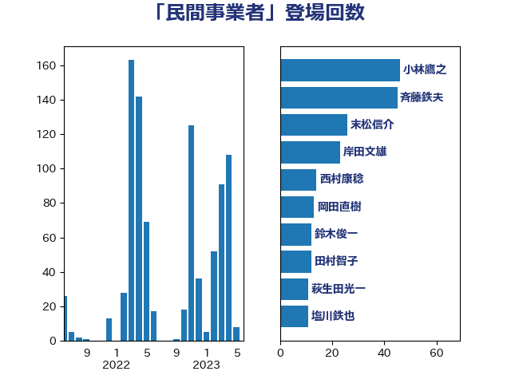

単語「民間事業者」

| 小林鷹之 | 自由民主党 | 46 回 |
| 斉藤鉄夫 | 公明党 | 45 回 |
| 末松信介 | 自由民主党 | 26 回 |
| 岸田文雄 | 自由民主党 | 23 回 |
| 西村康稔 | 自由民主党 | 14 回 |
| 岡田直樹 | 自由民主党 | 13 回 |
| 鈴木俊一 | 自由民主党 | 12 回 |
| 田村智子 | 日本共産党 | 12 回 |
| 萩生田光一 | 自由民主党 | 11 回 |
| 塩川鉄也 | 日本共産党 | 11 回 |
| 中西祐介 | 自由民主党 | 10 回 |
| 高橋千鶴子 | 日本共産党 | 8 回 |
| 永岡桂子 | 自由民主党 | 8 回 |
| 森屋隆 | 立憲民主党 | 7 回 |
| 末次精一 | 立憲民主党 | 7 回 |
| 井上哲士 | 日本共産党 | 7 回 |
| 音喜多駿 | 日本維新の会 | 5 回 |
| 神津たけし | 立憲民主党 | 5 回 |
| 石川博崇 | 公明党 | 5 回 |
| 小野泰輔 | 日本維新の会 | 5 回 |
| 伊藤岳 | 日本共産党 | 5 回 |
| 齋藤健 | 自由民主党 | 4 回 |
| 野田聖子 | 自由民主党 | 4 回 |
| 西岡秀子 | 国民民主党 | 4 回 |
| 石井苗子 | 日本維新の会 | 4 回 |
| 木村英子 | れいわ新選組 | 4 回 |
| 斎藤洋明 | 自由民主党 | 4 回 |
| 岡田克也 | 立憲民主党 | 4 回 |
| 山口壯 | 自由民主党 | 4 回 |
| 加藤勝信 | 自由民主党 | 4 回 |
| 阿部司 | 日本維新の会 | 3 回 |
| 足立康史 | 日本維新の会 | 3 回 |
| 赤木正幸 | 日本維新の会 | 3 回 |
| 谷田川元 | 立憲民主党 | 3 回 |
| 西銘恒三郎 | 自由民主党 | 3 回 |
| 西村明宏 | 自由民主党 | 3 回 |
| 若宮健嗣 | 自由民主党 | 3 回 |
| 篠原豪 | 立憲民主党 | 3 回 |
| 田村貴昭 | 日本共産党 | 3 回 |
| 牧島かれん | 自由民主党 | 3 回 |
| 浅野哲 | 国民民主党 | 3 回 |
| 沢田良 | 日本維新の会 | 3 回 |
| 水野素子 | 立憲民主党 | 3 回 |
| 梶原大介 | 自由民主党 | 3 回 |
| 松本剛明 | 自由民主党 | 3 回 |
| 木原誠二 | 自由民主党 | 3 回 |
| 斎藤アレックス | 国民民主党 | 3 回 |
| 後藤茂之 | 自由民主党 | 3 回 |
| 広瀬めぐみ | 自由民主党 | 3 回 |
| 平将明 | 自由民主党 | 3 回 |
| 山本佐知子 | 自由民主党 | 3 回 |
| 大野敬太郎 | 自由民主党 | 3 回 |
| 中谷真一 | 自由民主党 | 3 回 |
| 三浦信祐 | 公明党 | 3 回 |
| 鬼木誠 | 立憲民主党 | 2 回 |
| 高木かおり | 日本維新の会 | 2 回 |
| 金城泰邦 | 公明党 | 2 回 |
| 谷公一 | 自由民主党 | 2 回 |
| 蓮舫 | 立憲民主党 | 2 回 |
| 葉梨康弘 | 自由民主党 | 2 回 |
| 舟山康江 | 国民民主党 | 2 回 |
| 美延映夫 | 日本維新の会 | 2 回 |
| 穀田恵二 | 日本共産党 | 2 回 |
| 福重隆浩 | 公明党 | 2 回 |
| 礒崎哲史 | 国民民主党 | 2 回 |
| 石井拓 | 自由民主党 | 2 回 |
| 田村憲久 | 自由民主党 | 2 回 |
| 田島麻衣子 | 立憲民主党 | 2 回 |
| 渡辺猛之 | 自由民主党 | 2 回 |
| 浜口誠 | 国民民主党 | 2 回 |
| 河野太郎 | 自由民主党 | 2 回 |
| 河西宏一 | 公明党 | 2 回 |
| 池田佳隆 | 自由民主党 | 2 回 |
| 森本真治 | 立憲民主党 | 2 回 |
| 柴田巧 | 日本維新の会 | 2 回 |
| 斎藤嘉隆 | 立憲民主党 | 2 回 |
| 山田勝彦 | 立憲民主党 | 2 回 |
| 山本香苗 | 公明党 | 2 回 |
| 山崎正恭 | 公明党 | 2 回 |
| 小宮山泰子 | 立憲民主党 | 2 回 |
| 宮本岳志 | 日本共産党 | 2 回 |
| 大島敦 | 立憲民主党 | 2 回 |
| 堂込麻紀子 | 無所属 | 2 回 |
| 佐藤英道 | 公明党 | 2 回 |
| 伊藤渉 | 公明党 | 2 回 |
| 中川貴元 | 自由民主党 | 2 回 |
| 黄川田仁志 | 自由民主党 | 1 回 |
| 高見康裕 | 自由民主党 | 1 回 |
| 高木陽介 | 公明党 | 1 回 |
| 高市早苗 | 自由民主党 | 1 回 |
| 鈴木敦 | 国民民主党 | 1 回 |
| 野田国義 | 立憲民主党 | 1 回 |
| 野村哲郎 | 自由民主党 | 1 回 |
| 道下大樹 | 立憲民主党 | 1 回 |
| 近藤和也 | 立憲民主党 | 1 回 |
| 輿水恵一 | 公明党 | 1 回 |
| 赤澤亮正 | 自由民主党 | 1 回 |
| 赤池誠章 | 自由民主党 | 1 回 |
| 藤丸敏 | 自由民主党 | 1 回 |
| 若松謙維 | 公明党 | 1 回 |
| 船橋利実 | 自由民主党 | 1 回 |
| 自見はなこ | 自由民主党 | 1 回 |
| 羽田次郎 | 立憲民主党 | 1 回 |
| 細田健一 | 自由民主党 | 1 回 |
| 竹谷とし子 | 公明党 | 1 回 |
| 竹詰仁 | 国民民主党 | 1 回 |
| 福島伸享 | 無所属 | 1 回 |
| 神田潤一 | 自由民主党 | 1 回 |
| 石原宏高 | 自由民主党 | 1 回 |
| 石井章 | 日本維新の会 | 1 回 |
| 矢倉克夫 | 公明党 | 1 回 |
| 田村まみ | 国民民主党 | 1 回 |
| 田中健 | 国民民主党 | 1 回 |
| 瀬戸隆一 | 自由民主党 | 1 回 |
| 渡辺博道 | 自由民主党 | 1 回 |
| 深澤陽一 | 自由民主党 | 1 回 |
| 浜田聡 | NHK党 | 1 回 |
| 津島淳 | 自由民主党 | 1 回 |
| 河野義博 | 公明党 | 1 回 |
| 櫛渕万里 | れいわ新選組 | 1 回 |
| 森屋宏 | 自由民主党 | 1 回 |
| 柳本顕 | 自由民主党 | 1 回 |
| 柳ヶ瀬裕文 | 日本維新の会 | 1 回 |
| 枝野幸男 | 立憲民主党 | 1 回 |
| 松野博一 | 自由民主党 | 1 回 |
| 東徹 | 日本維新の会 | 1 回 |
| 木原稔 | 自由民主党 | 1 回 |
| 朝日健太郎 | 自由民主党 | 1 回 |
| 星北斗 | 自由民主党 | 1 回 |
| 新垣邦男 | 立憲民主党 | 1 回 |
| 庄子賢一 | 公明党 | 1 回 |
| 川田龍平 | 立憲民主党 | 1 回 |
| 川合孝典 | 国民民主党 | 1 回 |
| 岩谷良平 | 日本維新の会 | 1 回 |
| 岩渕友 | 日本共産党 | 1 回 |
| 山本博司 | 公明党 | 1 回 |
| 山崎誠 | 立憲民主党 | 1 回 |
| 山口那津男 | 公明党 | 1 回 |
| 山口晋 | 自由民主党 | 1 回 |
| 小沢雅仁 | 立憲民主党 | 1 回 |
| 小林史明 | 自由民主党 | 1 回 |
| 小林一大 | 自由民主党 | 1 回 |
| 小倉將信 | 自由民主党 | 1 回 |
| 寺田稔 | 自由民主党 | 1 回 |
| 宮路拓馬 | 自由民主党 | 1 回 |
| 宮崎勝 | 公明党 | 1 回 |
| 室井邦彦 | 日本維新の会 | 1 回 |
| 太田房江 | 自由民主党 | 1 回 |
| 大串正樹 | 自由民主党 | 1 回 |
| 塩田博昭 | 公明党 | 1 回 |
| 城井崇 | 立憲民主党 | 1 回 |
| 土田慎 | 自由民主党 | 1 回 |
| 和田義明 | 自由民主党 | 1 回 |
| 吉田久美子 | 公明党 | 1 回 |
| 吉川ゆうみ | 自由民主党 | 1 回 |
| 古賀友一郎 | 自由民主党 | 1 回 |
| 北村経夫 | 自由民主党 | 1 回 |
| 勝俣孝明 | 自由民主党 | 1 回 |
| 保岡宏武 | 自由民主党 | 1 回 |
| 佐々木紀 | 自由民主党 | 1 回 |
| 仁比聡平 | 日本共産党 | 1 回 |
| 井林辰憲 | 自由民主党 | 1 回 |
| 中田宏 | 自由民主党 | 1 回 |
| 中川宏昌 | 公明党 | 1 回 |
| 中司宏 | 日本維新の会 | 1 回 |
| 上田勇 | 公明党 | 1 回 |
| 三木圭恵 | 日本維新の会 | 1 回 |
| ながえ孝子 | 無所属 | 1 回 |
| たがや亮 | れいわ新選組 | 1 回 |